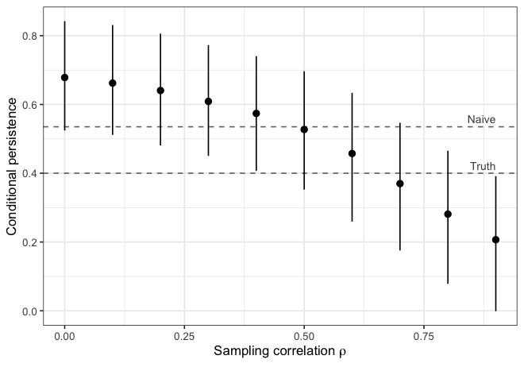

Meta-analyses often measure how well intervention effects persist by regressing follow-up effect sizes on endline effect sizes. Both effect sizes come from the same participants and outcomes, so their sampling errors are correlated, and the naive slope usually overstates persistence.
ghreg fits the Bayesian meta-regression of Gilbert and Himmelsbach (2026). The model accounts for sampling error in both effect sizes and for the correlation between them, and it supports the sensitivity analysis the paper recommends when that correlation is unknown.
Installation
# install.packages("remotes")
remotes::install_github("joshgilbert1994/ghreg", build_vignettes = TRUE)Models are fit in Stan. ghreg works with rstan out of the box. If cmdstanr and CmdStan are installed, ghreg uses them instead. The model compiles once per machine; after that, fits take a few seconds.
Example
persist_sim is a simulated meta-analysis of 174 pairs of effect sizes from 60 studies, with a true conditional persistence of 0.4. The naive slope is 0.54:
gh_reg() corrects for the correlated sampling error. rho is the sampling correlation: one number, or a column with one value per pair.
fit <- gh_reg(persist_sim, es1, se1, es2, se2, study = study, rho = rho)
fit
#> Gilbert-Himmelsbach persistence meta-regression
#> 3-level model: 174 pairs of effect sizes in 60 studies
#> Sampling correlation (rho): varies, 0.23 to 0.94 (mean 0.67)
#> Backend: cmdstanr, 4 chains x 1000 draws; 0 divergent transitions
#>
#> # A tibble: 7 × 8
#> term estimate std.error ci.lower ci.upper rhat ess_bulk ess_tail
#> <chr> <dbl> <dbl> <dbl> <dbl> <dbl> <dbl> <dbl>
#> 1 beta 0.334 0.0908 0.149 0.503 1.00 1220. 1624.
#> 2 alpha 0.0139 0.0433 -0.0672 0.103 1.00 1266. 1752.
#> 3 mu 0.444 0.0268 0.391 0.496 1.00 3036. 2288.
#> 4 study_sd1 0.139 0.0290 0.0815 0.196 1.00 3042. 1628.
#> 5 study_sd2 0.0621 0.0221 0.0106 0.104 1.01 1209. 552.
#> 6 es_sd1 0.161 0.0241 0.116 0.210 1.00 2106. 2258.
#> 7 es_sd2 0.0580 0.0251 0.00359 0.104 1.00 943. 468.The summary is a tibble (fit$summary) with broom-style column names. summary() recomputes it at another interval level:
summary(fit, ci.level = 0.9, diagnostics = FALSE)
#> # A tibble: 7 × 5
#> term estimate std.error ci.lower ci.upper
#> <chr> <dbl> <dbl> <dbl> <dbl>
#> 1 beta 0.334 0.0908 0.183 0.478
#> 2 alpha 0.0139 0.0433 -0.0547 0.0852
#> 3 mu 0.444 0.0268 0.399 0.488
#> 4 study_sd1 0.139 0.0290 0.0922 0.187
#> 5 study_sd2 0.0621 0.0221 0.0218 0.0965
#> 6 es_sd1 0.161 0.0241 0.123 0.201
#> 7 es_sd2 0.0580 0.0251 0.0110 0.0964The correlation of outcomes across time is rarely reported, so the paper treats it as a sensitivity parameter. gh_sensitivity() refits over a grid of values and returns the results as a tibble:
sens <- gh_sensitivity(persist_sim, es1, se1, es2, se2, study = study,
rho = seq(0, 0.9, by = 0.1))
plot(sens, ref = c(Naive = 0.535, Truth = 0.4))
See the Get started guide (also available as vignette("ghreg")) for the details, and the package website for all the help pages.
Functions
| Function | Purpose |
|---|---|
gh_reg() |
Fit the model for a given sampling correlation |
gh_sensitivity() |
Refit over a range of sampling correlations |
gh_prior() |
Set priors (defaults are the paper’s) |
gh_simulate() |
Simulate meta-analytic data from trials with correlated outcomes |
gh_backend() |
Report or choose the Stan backend |
Citation
If you use ghreg, please cite the paper:
Gilbert, J. B., & Himmelsbach, Z. (2026). Why fadeout is (probably) worse than we think: Adjusting for correlated sampling error in meta-analyses of behavioral interventions (EdWorkingPaper No. 26-1394). Annenberg Institute at Brown University. https://doi.org/10.26300/87r9-qm15
citation("ghreg") gives a BibTeX entry.